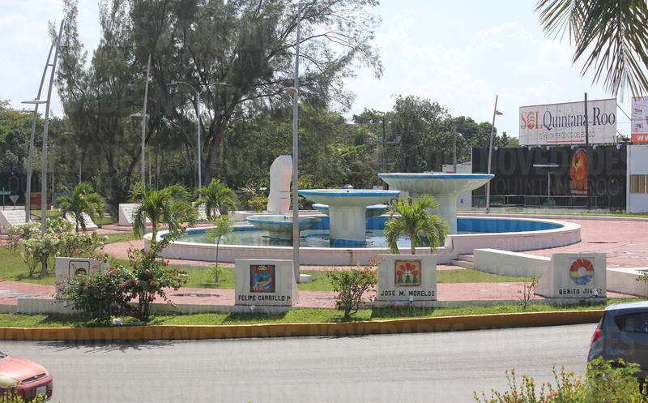

<ion-header>
  <ion-toolbar color = "primary">
      <ion-buttons slot="end" (click)= "close()">
          <!-- <ion-button>
            ¿Donde estoy?
          </ion-button> -->
          <ion-chip>
            <ion-icon name="close"></ion-icon>
            <ion-label>Cerrar</ion-label>
          </ion-chip>
        </ion-buttons>
    <ion-title>Colonia</ion-title>
  </ion-toolbar>
</ion-header>

<ion-content>

  <h4 class="centrar">Proterritorio</h4>
  <ion-card>
      <ion-card-header>
          
        <ion-card-title>Colonia Comité Proterritorio, Código Postal 77086, Chetumal, Quintana Roo</ion-card-title>
      </ion-card-header>
    
      <ion-card-content>
        Es una colonia añeja situada en la ciudad de Chetumal con indice de delicuencia Alto.
        Se recomienda que al visitar esta Colonia se recorra con precaucion.
      </ion-card-content>
    </ion-card>


    <ion-card>
        <ion-card-header>
            <label>Horas de mayor incidente:</label> 
        </ion-card-header>
        <ion-card-content>
          
          <label>{{almacenaMientoCaribe.toString()}}</label>
          
        </ion-card-content>
      </ion-card>          
</ion-content>
